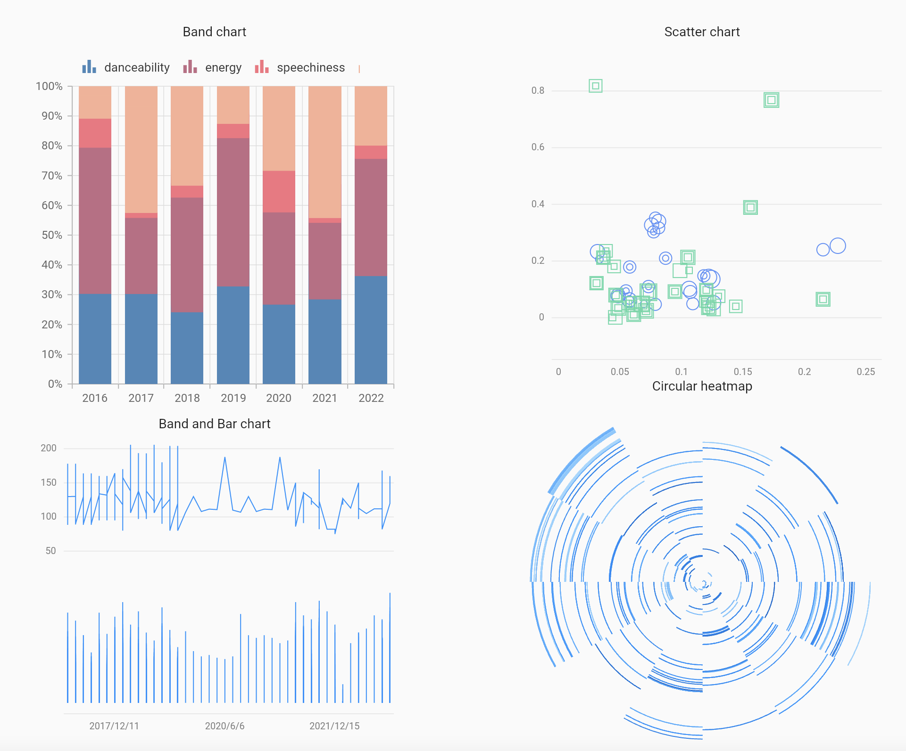

Visualization
ビジュアライゼーションの授業課題で作成したウェブサイトである。Flutter on the webを用いてgithub, firebase上でデプロイした。データはSpotify APIを用いてTwiceのアーティストIDからアルバムに関する情報(ex.特徴量)を取得した。Spotify APIの取得方法はこちらから。 右のグラフの可視化はこちらから。 グラフを可視化するにあたり以下のライブラリを使用しました。 Synfunction, 詳細はこちらから。 Graphic, 詳細はこちらから。
Get spotify data
Spotify APIを使うためにはまずClient IDとClient Secretを取得する必要がある。Spotifyのアカウントを作成し、ログインする。 Spotify for DevelopersからDashboardを開き、CREATE AN APPからAPP name(アプリの名前)とAPP description(アプリの説明)を入力し、規約をチェックしてCREATEする。 DashboardからID等を参照する。lib直下にkeyフォルダを作成してその中にapikey.dartを作成する。idとkeyを設定したらメインで呼び出す。
/* apikey.dart */
String api_id = 'CLIENT_ID';
String api_key = 'CLIENT_SECRET';
/* spotify.dart */
import 'key/apikey.dart';
String APIid = api_id;
String APIkey = api_key;
次に